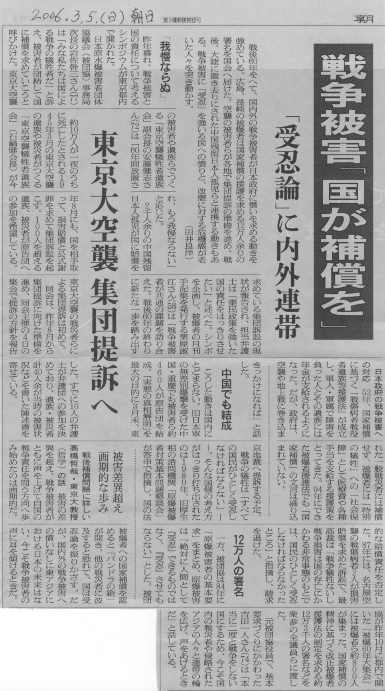
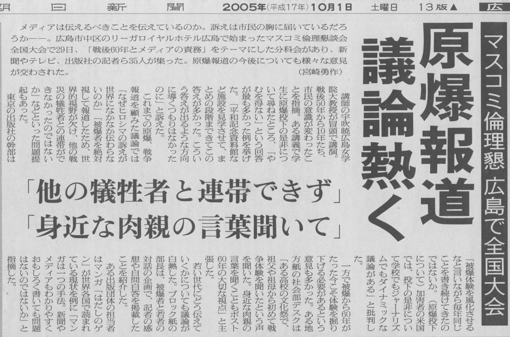
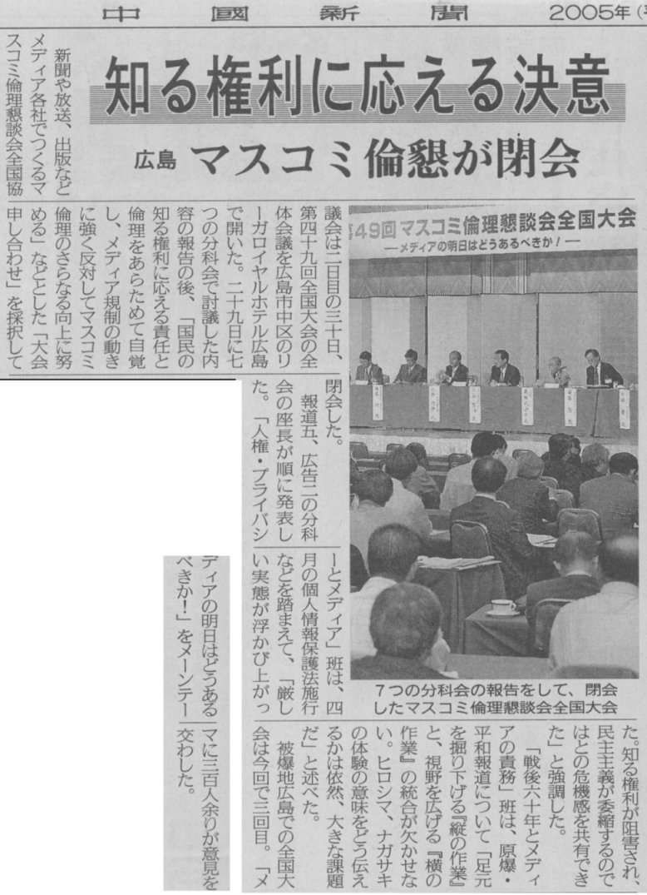

A.原水禁運動と一般戦災者の連帯
３、戦争被害「国が補償を」 「受忍論」に内外連帯
朝日新聞2006.3.5.（日）
「朝日新聞」
戦後60年をへて、国内外の戦争被害者が日本政府に償いを求める動きを強めている。
広島、長崎の被爆者は国家補償の援護を求める12万人余りの署名を国会へ届けた。
空襲の被害者らが各地で集団提訴の準備を進め、戦後、大陸に置き去りにされた中国残留日本人孤児らと連携する動きもある。
戦争被害に「受忍」を強いる国への憤りと、改憲に対する危機感が老いた人々を突き動かす。（田井良洋）
「我慢ならぬ」
昨年暮れ、戦争被害と国の責任について考えるシンポジウムが東京都内で聞かれた。
日本原水爆被害者団体協議会（被団協）事務局次長の岩佐幹三さん（77）は「みな私たちは国による戦争の犠牲者だ」と訴え、被害者が団結して国に補償を求めていこうと呼びかけた。
東京大空襲の被害者や遺族らでつくる「東京空襲犠牲者遺族会」副会長の安藤健志さん（72）は「60年間放置され、もう我慢ならない」と応じた。
２千人余りの中国残留日本人孤児が国に賠償を求めている集団訴訟の現状が報告され、担当弁護士は「棄民政策を強いた国の責任をはっきりさせたい」と述べた。
シンポを企画し、被爆者の月刊手記集を発行する栗原淑江さん（58）は「戦争被害者が共通の課題を語り合えた。戦後60年の終わりに新たな一歩を踏み出すきっかけになれば」と話した。
中国でも結成
こうした動きは国内にとどまらない。旧日本軍の無差別爆撃を受けた中国・重慶でも被害者ら約４６０人が原告団を結成。
「実態の真相解明」を最大の目的に３月末、東京地裁へ提訴する予定。
戦争の犠牲は「すべての国民がひとしく受忍しなければならない」－－。
そんな国側の考え方がはっきり打ち出されたのは１９８０年。
旧厚生相の諮問機関「原爆被爆者対策基本問題懇談会」が答申で指摘し、国の法的な賠償責任を否定した。
87年には、名古屋空襲の戦傷病者２人が損害賠償を求めた訴訟で、最高裁は
「戦争犠牲ないし戦争損害は国の存亡にかかわる非常事態のもとでは、国民のひとしく受忍しなければならなかったところ」と指摘し、請求を退けた。
12万人の署名
一方、被団協は84年に「原爆被害者の基本要求」をまとめ、原爆被害は「絶対に人間として『受忍』できるものではなく、『受忍』させてもならない」とした。
被団協が昨年10月に都内で開いた「被爆60年大集会」には被爆者ら約８００人が集まった。
国家補償の精神に基づく改正被爆者援護法の制定を求める約12万３千人の署名などを衆参の全議員らに渡した。
元被団協役員で、基本要求づくりにかかわった吉田一人さん（74）は「本当に二度と戦争をしない国にするため、
今こそ国内の戦災者や侵略されたアジアの人々と連帯の輪を広げ、声をあげるときだ」と話している。
東京大空襲集団提訴へ
約10万人が一夜のうちに死亡したとされる１９４５年３月の東京大空襲の遺族や被災者がつくる「東京空襲犠牲者遺族会」（石鍋健会長）が今年８月にも、国を相手取って、損害賠償と公式謝罪を求めて集団訴訟を起こす。
１００人を超える遺族、被災者が原告団への参加を希望している。
東京大空襲の戦災者らによる集団提訴は初めて。
開会は、昨年８月から集団提訴に向けた準備を進め、同会主催の４日の集会で提訴の方針を報告した。
すでに10入の弁護士が弁護団への参加を決めており、遺族・被災者計40人余が当時の被害状況などを書いた陳述書を寄せている。
被害差異超え画期的な歩み
戦後補償問題に詳しい高橋哲哉・東京大教授（哲学）の話
被害の差異を超え、戦争被害者がともに声を上げて自国の戦争責任を問う方向へ歩み始めたのは画期的だ。
被爆者への国家補償を認めると「パンドラの箱」が開き、他の戦災者に波及すると恐れて、国は受忍論を振りかざす。だが、国内外の戦争被害への償いなしに東アジアにおける日本の未来はない。
今こそ戦争被害者の声に耳を傾けるときだ。
日本政府の戦争被害への対応
52年、国家補償に基づく「戦傷病者戦没者遺族等援護法」が成立し、軍人・軍属で障害を負った人とその遺族には年金が支給されるようになった。
だが、政府は、空襲や地上戦に巻き込まれた一般戦災者には補償せず、被爆者には「特別の犠牲」への「社会保障」として医療費や各種手当を支給する援護策をとってきた。
94年にできた被爆者援護法でも「国家補償」の文言は盛り込まれていない。
２、マスコミ倫理懇 原爆報道をめぐって
朝日新聞（広島版）2005年10月1日（土）
「朝日新聞」
マスコミ倫理懇 広島で全国大会
原爆報道 議論熱く
「他の犠牲者と連帯できず」
「身近な肉親の声を聞いて」
メディアは伝えることを伝えているのか。訴えは市民の胸に届いているのだろうかーー。
広島市中区のリーがロイヤルホテル広島で始まったマスコミ倫理懇談会全国大会で29日、
「戦後60年とメディアの責務」をテーマにした分科会があり、新聞やテレビ、出版社の
記者ら35人が集まった。
原爆報道の今後についても様々な意見が交わされた。
講師の宇吹暁広島女学院大教授が冒頭で講演。
戦後50年から10年たち、市民の意識が変わったことを指摘。
ある講義で学生に原爆投下の是非について尋ねたところ、「やむを得ない」という回答が
最も多かった例を挙げた。
「平和記念資料館など施設を見学させて、まとめの段階まできてこの答えが多かった。
こういう答えが出るような方向に導くつもりはなかったのに」と訴えた。
これまでの原爆、戦争報道を顧みた議論では
「なぜヒロシマの訴えが世界になかなか伝わらないのか」
「被爆者を絶対視して報道したため、世界的視野が欠け、
他の戦災の犠牲者との連帯ができなかったのではないか」などといった問題提起もあった。
東京の出版社の幹部は
「被爆体験を風化させるなと言いながら毎年同じことを書き続けてきたのではないか。
（原爆投下について）加害者の米国では、投下の是非について
学校でもジャーナリズムでもダイナミックな議論がある」と批判した。
一方で被爆から60年がたった今こそ体験を掘り下げる必要があるという意見も多かった。
ある地方紙の社会部デスクは
「ある高校の文化祭で、祖父や祖母から初めて戦争体験を聞いたという声を聞いた。
身近な肉親の言葉を聞くこともポスト60年の大切な視点」と主張した。
若い世代にどう伝えていくかについても議論が白熱した。
ブロック紙の部長は、
被爆者と若者の対話の企画で、記者の感想や自問自答を掲載したことを紹介した。
ある出版団体の担当者は
マンガ「はだしのゲン」が世界各国で読まれている現状を例に「マンガは一つの手法。
新聞やメディアもわかりやすくおもしろく書いても問題はないのではないか」と指摘した。
（読後感）
なるほど、マスコミも現在の原爆問題の報道に反省を始めたのだな。
今後、一般戦災者と原爆被曝者との連帯の強化を記事にし続けて欲しいものだ。
中国新聞 2005年10月1日（土）
「中国新聞」
知る権利に応える決意
広島 マスコミ倫懇が閉会
前略
「戦後六十年とメディアの責務」班は、原爆・平和報道について
「足元を掘り下げる『縦の作業』と、視野を広げる『横の作業』の統合が欠かせない。
ヒロシマ、ナガサキの体験の意味をどう伝えるかは依然、大きな課題だ」と述べた。
（読後感）
私には、何を言っているのか、具体的な意味が読み取れない。
何を「統合」し、何が「大きな課題」なのか。分かるように報道すべきだ。
戦後の反戦平和運動 へ
トップページに戻る